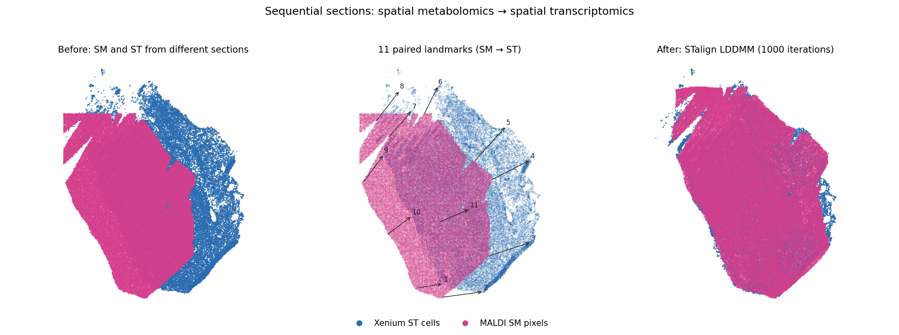
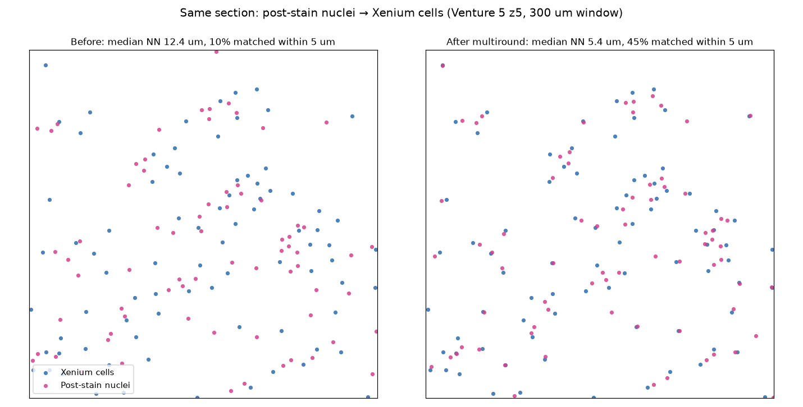
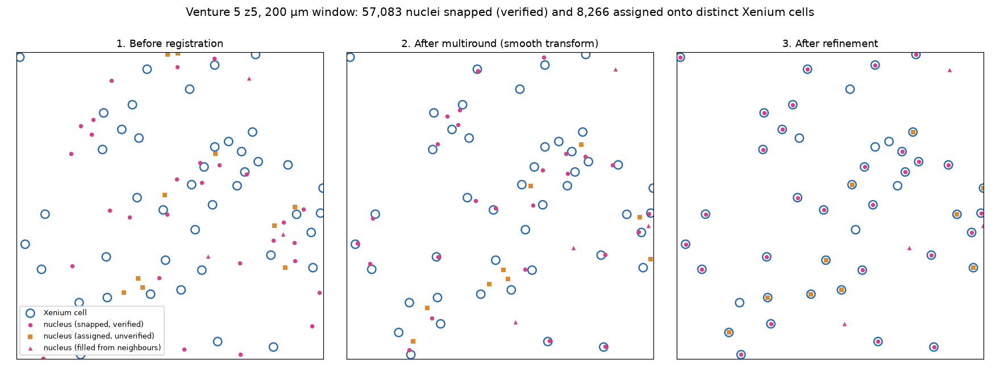
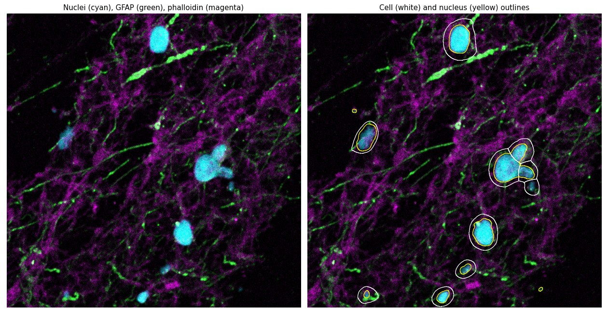

Examples¶
Worked examples on real data from the BCRL Venture cohort, run on the WEHI Milton cluster. Timings and results are from those runs; your numbers will depend on the data and hardware.
To try the API without any of these datasets, run the synthetic examples shipped with the repository:
python examples/alignment_example.py # pre-registration, centroid fitting, job specs
1. Spatial metabolomics → spatial transcriptomics¶
MALDI spatial metabolomics (SM) acquired on a section neighbouring a Xenium spatial transcriptomics (ST) section. The tissue differs between sections, so this uses STalign LDDMM guided by manual landmarks.

Venture 5, Xenium section Z2 and MALDI section Ven5B. 459,969 SM pixels, 53,622 ST cells, 11 landmark pairs.
Inputs
| File | Contents |
|---|---|
Z2_final_aligned_annos.csv |
Xenium cells; registration uses x_final / y_final (auto-detected) |
Ven5B_information_matrix_tissue_only_full_with_xy.csv |
MALDI pixels: x, y and one column per m/z (442 MB) |
ven5_z2_st_points_B_points.npy, ven5_z2_sm_points_B_points.npy |
11 paired landmarks |
Step 1 — rasterise both modalities for landmarking¶
from smint.alignment import prepare_landmark_inputs
out = prepare_landmark_inputs(
st_file="Z2_final_aligned_annos.csv",
sm_file="Ven5B_information_matrix_tissue_only_full_with_xy.csv",
output_prefix="ven5_z2",
sm_kwargs=dict(scale_xy=10.0, rotate_left_90=True), # MALDI pixels -> microns
)
Step 2 — place landmarks¶
Open the two datasets in the napari plugin (Plugins →
SMINT Registration → 3. Landmarks), or run STalign's point_annotator.py on
the two .npz files. Pick the same features in the same order in both;
correspondence is positional.
Step 3 — register on a GPU node¶
smint-alignment st-sm \
--st Z2_final_aligned_annos.csv \
--sm Ven5B_information_matrix_tissue_only_full_with_xy.csv \
--st-points ven5_z2_st_points_B_points.npy \
--sm-points ven5_z2_sm_points_B_points.npy \
--rotate-left-90 --orientation stalign \
--output-dir /vast/scratch/$USER/ven5_z2 \
--submit --watch --partition gpuq --gpus 1 --memory 64G \
--worker-python /path/to/STalign_env/bin/python
submitted st_sm via sbatch (30527655)
state: completed -- st_sm round finished
{"transformed_csv": "/vast/scratch/.../ven5_z2/sm_transformed.csv"}
The worker ran LDDMM (1,000 iterations) on one A30; from submission to
finished output, including queueing, took 72 s. The output keeps every m/z column and adds
x_transformed / y_transformed.
The same run from Python:
from smint.alignment import register_sm_to_st
sm = register_sm_to_st(
st_file="Z2_final_aligned_annos.csv",
sm_file="Ven5B_information_matrix_tissue_only_full_with_xy.csv",
st_points_file="ven5_z2_st_points_B_points.npy",
sm_points_file="ven5_z2_sm_points_B_points.npy",
sm_kwargs=dict(scale_xy=10.0, rotate_left_90=True),
orientation="stalign",
output_path="sm_transformed.csv",
)
Pass orientation=\"stalign\" to overlay on ST
The default, "dataset", reproduces historical outputs but is transposed
relative to the ST cells. Plotted over ST it looks like a failed
registration. See Coordinate orientation.
Step 4 — check the result¶
import numpy as np, pandas as pd
from scipy.spatial import cKDTree
st = pd.read_csv("Z2_final_aligned_annos.csv", usecols=["x_final", "y_final"]).to_numpy()
sm = pd.read_csv("sm_transformed.csv", usecols=["x_transformed", "y_transformed"]).to_numpy()
d, _ = cKDTree(st).query(sm)
print(f"median distance to nearest ST cell: {np.median(d):.1f} um")
median distance to nearest ST cell: 16.4 um
That is about half a 30 µm MALDI pixel. Because the sections differ, there is no ground truth to score against; this distance and the overlay are the practical checks.
2. Coarse pre-registration with an orientation search¶
Before landmarking, bring a dataset roughly into the target frame. MALDI pixels from Ven5B (converted to microns) arrive rotated relative to the Z2 Xenium cells:
smint-alignment pretransform \
--source ven5b_sm_xy.csv --target Z2_final_aligned_annos.csv \
--search --output ven5b_pre.csv
INFO smint.cli.align: Best: rotation=90 flip_x=False flip_y=False
scale : 1.2161, 1.2161
rotation : 90.00 deg
reflects : False
overlap : 0.954
wrote : ven5b_pre.csv
transform : ven5b_pre.csv.transform.json
--search tries every 15° rotation with and without each flip and keeps the
best overlap score. Here it recovered the 90° rotation that the Ven5B
pipeline otherwise applies by hand (rotate_left_90=True), in 52 s for
459,969 pixels. The matrix and its decomposition are saved next to the
output, so the step can be reproduced exactly. The napari plugin's
2. Pre-register widget does the same interactively.
3. Same-section registration: nuclei onto Xenium cells¶
When a second modality is acquired on the same section — here, nuclei segmented from a post-Xenium stain of Venture 5 section z5 — centroids correspond one-to-one:
smint-alignment centroid \
--source transformed_nuc_points_in_global.csv --source-cols x_centroid y_centroid \
--target z5_pre_aligned_coordinates.csv \
--output-dir /vast/scratch/$USER/z5_nuc_to_xenium
{
"method": "multiround",
"n_matched": 49206,
"tre_initial": 10.96,
"tre_fit": 4.45,
"tre_validation": 4.93,
"refinement": {"n_snapped": 57083, "n_assigned": 8266, "n_filled": 9147,
"fraction_targets_matched": 0.88,
"median_deviation": {"snapped": 4.14, "assigned": 8.54},
"snapped_per_pass": [55208, 56923, 57069, 57083]},
"rounds": [
{"stage": "initial", "median_nn": 12.40},
{"stage": "affine", "block_size": 500.0, "blocks": 300, "consistent_blocks": 0.91,
"median_nn": 5.38, "accepted": true},
{"stage": "tps", "block_size": 250.0, "blocks": 1013, "consistent_blocks": 0.77,
"median_nn": 5.43, "accepted": false}
]
}

88,906 nuclei and 74,247 Xenium cells, about 17 µm apart; 3 s.
How to read this. tre_validation is measured on a quarter of the nuclei
held out before any matching, and is the number to trust for the transform:
11.0 µm → 4.9 µm. The rounds show the affine voting round did the work; the
finer TPS round didn't improve the fitting nuclei, so it was rejected.
Registration is then refined: 57,083 nuclei snap exactly onto distinct
Xenium cells over four pairing passes, each checked against its
neighbourhood, and 8,266 more are assigned to the free cells around them —
88% of Xenium cells now carry a nucleus. The assigned pairs deviate twice
as much from their neighbourhood (8.5 µm against 4.1 µm), so treat them as
unverified; the output CSV's registration_status and neighbour_deviation
say which is which. See Snapping matched nuclei.

The single-round methods can't do this: they match each nucleus to its
nearest cell before fitting, and with a starting offset close to the cell
spacing most of those matches are wrong. --method ransac+tps only reaches
11.5 µm here. See Why multiple rounds.
4. Segmenting a whole-slide image on one GPU¶
A fine-tuned Cellpose-SAM model segments cells, and Cellpose's base model segments nuclei, chunk by chunk:
from smint.segmentation import process_large_image
results = process_large_image(
image_path="r6_crop.ome.tif", # (C, Y, X): ch0 nuclei, ch1 GFAP
csv_base_path="seg/r6",
chunk_size=(1024, 1024),
cell_model_path="/path/to/models/cpsam_20260225_153049",
cells_diameter=120, cells_flow_threshold=0.6, cells_cellprob_threshold=-2.5,
cells_channels=[2, 1], # main = channel 2 (GFAP), nuclear = channel 1
nuclei_model_path="nuclei", # Cellpose 4: falls back to cpsam, with a warning
nuclei_diameter=25, nuclei_flow_threshold=0.3, nuclei_cellprob_threshold=0.2,
nuclei_channels=[1, 0],
visualize=True, visualize_output_dir="seg/vis",
)
print(results["total_cells"], results["total_nuclei"])
33 29

Venture 6, one 1024 px chunk of a 2048 × 2048 px crop; Cellpose 4 on one A30 took 23 s for the crop. Cyan: nuclei; green: GFAP; magenta: phalloidin. Right: cell outlines (white) and nucleus outlines (yellow).
channels follows Cellpose 3's convention ([main, nuclear], 1-based, 0 =
none) and selects the same input on Cellpose 3 and 4.
5. Distributed segmentation on SLURM GPUs¶
For a whole slide, tiles are spread across GPU workers that SMINT launches through SLURM, then stitched and reconciled:
from smint.segmentation import run_distributed_segmentation
results = run_distributed_segmentation(
image_path="Venture6_tile_scan_R6.ome.tif", # OME-TIFF or OME-Zarr, on shared storage
output_dir="/vast/scratch/me/r6_seg",
cell_model="/path/to/models/cpsam_20260225_153049",
nuclei_model="nuclei",
cell_params={"diameter": 120, "flow_threshold": 0.6,
"cellprob_threshold": -2.5, "channels": [2, 1]},
nuclei_params={"diameter": 25, "flow_threshold": 0.3,
"cellprob_threshold": 0.2, "channels": [1, 0]},
chunk_size=1048, tile_overlap=256,
backend="slurm", n_workers=4,
slurm={"queue": "gpuq", "gpu_type": "A30", "memory": "64GB"},
)
Tiles: 16 of 1048 px, 256 px overlap
4 worker(s) ready
Stitched 66 polygons: 44 after merging, 44 after trim/remove
30 of 103 cell outlines touch no nucleus and were dropped
Stitched 73 polygons: 43 after merging, 43 after trim/remove
Reconciled 43 cells / 44 nuclei -> 44 cells / 44 nuclei
Done in 0.6 min
Run the coordinator itself as a small CPU job (sbatch on regular); it
submits the GPU workers and only stitches. The output directory then holds
cells_outlines.csv / nuclei_outlines.csv (outline vertices),
cells_summary.csv / nuclei_summary.csv (centroids, areas, and which cell
each nucleus belongs to) and full-resolution label masks. See
Segmentation for how tiles are stitched.